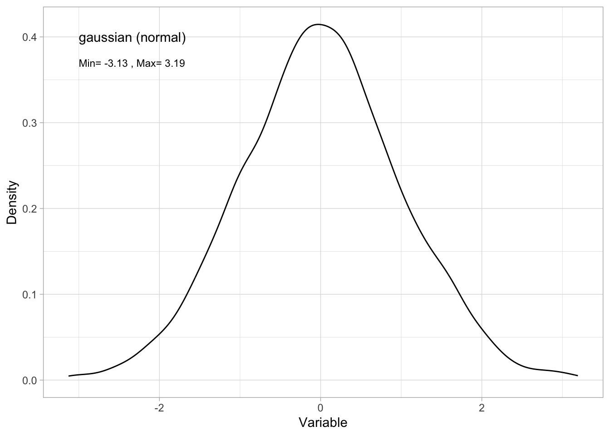

# Simulating data
set.seed(12) # setting the seed for the random number generator
n <- 2000 # sample size
Dat <- data.frame(x = rnorm(n = n,
mean = 0, # mean of data
sd = 1)) # standard deviation of dataData Distributions
In this section you will:
Learn what a data distribution is
Learn how data distributions can be used to describe variability in your observations
Learn types of data distributions useful for modelling biological observations
What is a data distribution?
A data distribution is a math function that specifies all possible values a variable can take and the relative frequency of those values1. Data distributions can be continuous (any real value) or discrete (only integer values) values over a defined range.
Why are data distributions useful?
We can use properties of data distributions to describe our observations and identify strange values (e.g. errors and outliers)
Range: defined by the minumum and maximum values of the variable. You can get the range of your variable with R’s
range()function.Probability density function (PDF): The PDF describes the probability that a particular value will occur. It can be approximated in R with
density(). The PDF is approximated by the frequency histogram of your variable. You can make a histogram in R withhist()or in ggplot withgeom_hist().Quantiles: Quantiles break the observations into groups. It is common to define the 25%, 50% and 75% quantiles. The 25% quantile is the value of the variable where 25% of the values are below this value. The 50% quantile is the value of the variable where 50% of the values are below this value. This is also called the median. You can get the quantiles of your variables with R’s
quantile()function.Cumulative distribution function (CDF): The CDF visualizes a similar idea to quantiles: The CDF gives the probability that your variable is less than or equal to a particular value.
Let’s look at these ideas with some common data distributions found for biological data.
Types of data distributions common to biological data
Some data distributions commonly used for the stochastic portion when modelling biological hypotheses are:
The normal distribution:
The normal distribution describes random variables that are continuous and spanning a range from -∞ through +∞. This is also called a gaussian distribution. Here is an example simulating normally distributed data:
You can describe the variable with:
- a range:
range(Dat$x)[1] -3.128123 3.192117- by plotting a histogram:
library(ggplot2) # load ggplot2 package for plotting
ggplot()+ # start a ggplot
geom_histogram(data = Dat, mapping = aes(x = x), # add data as a histogram
bins = 100)+ # here you can adjust the number of bins
ylab("Count")+ # change y-axis label
xlab("Variable")+ # change x-axis label
theme_light()+ # change theme
geom_text(mapping=aes(x = 0, y = 100, label = "gaussian (normal)"), # add a label to the plot
hjust = "left")+ #left-justify the label
geom_text(mapping=aes(x = 0, y = 93,
label=paste("Min=",
round(min(Dat$x), 2),
", Max=",
round(max(Dat$x), 2))), #add min and max of my data to the plot
size = 3, # change the size of the label text
hjust = "left") #left-justify the label
Tip
Note that the frequency histogram approximates the probability density function. Here’s a method of plotting the PDF directly:
ggplot()+ # start a ggplot
geom_density(data = Dat, mapping=aes(x = x))+ # here you can adjust the number of bins
ylab("Density")+ # change y-axis label
xlab("Variable")+ # change x-axis label
theme_light()+ # change theme
geom_text(mapping=aes(x = -3, y = 0.4, label="gaussian (normal)"), # add a label to the plot
hjust = "left")+ #left-justify the label
geom_text(mapping=aes(x = -3, y = 0.37,
label=paste("Min=",
round(min(Dat$x), 2),
", Max=",
round(max(Dat$x), 2))), #add min and max of my data to the plot
size = 3, # change the size of the label text
hjust = "left") #left-justify the label
- by giving the quantiles:
quantile(Dat$x) 0% 25% 50% 75% 100%
-3.128123197 -0.643938488 -0.002835248 0.657686163 3.192117469 - or the CDF:
ggplot()+ # start a ggplot
stat_ecdf(mapping = aes(x = x), data = Dat, size = 2)+ # add the cumulative distribution function
theme_bw()+ # change the theme
ylab("probability")+ # change the y-axis label
xlab("observation value") # change the x-axis labelThe Gamma distribution
The Gamma distribution describes random variables that are continuous and only positive. Here is an example simulating Gamma distributed data:
# Simulating data
set.seed(12) # setting the seed for the random number generator
n <- 2000 # sample size
Dat<-data.frame(x=rgamma(n = n, # sample size
shape = 2)) # set the shape parameter of the Gamma distributionYou can describe the variable with:
- a range:
range(Dat$x)[1] 0.01551624 12.90316134- by plotting a histogram (approximating a PDF):
ggplot()+ # start a ggplot
geom_histogram(data = Dat, mapping = aes(x = x), # add data as a histogram
bins = 100)+ # here you can adjust the number of bins
ylab("Count")+ # change y-axis label
xlab("Variable")+ # change x-axis label
theme_light()+ # change theme
geom_text(mapping=aes(x = 4, y = 100, label = "Gamma"), # add a label to the plot
hjust = "left")+ #left-justify the label
geom_text(mapping=aes(x = 4, y = 93,
label=paste("Min=",
round(min(Dat$x), 2),
", Max=",
round(max(Dat$x), 2))), #add min and max of my data to the plot
size = 3, # change the size of the label text
hjust = "left") #left-justify the label- by giving the quantiles:
quantile(Dat$x) 0% 25% 50% 75% 100%
0.01551624 1.00477892 1.74534502 2.76876054 12.90316134 - or the CDF:
ggplot()+ # start a ggplot
stat_ecdf(mapping = aes(x = x), data = Dat, size = 2)+ # add the cumulative distribution function
theme_bw()+ # change the theme
ylab("probability")+ # change the y-axis label
xlab("observation value") # change the x-axis labelThe poisson distribution
The poisson distribution describes random variables that are only discrete, positive integers, also including 0. Here is an example simulating poisson distributed data:
# Simulating data
set.seed(12) # setting the seed for the random number generator
n <- 2000 # sample size
Dat<-data.frame(x=rpois(n = n, # sample size
lambda = 3)) # set the lambda parameter of the poisson distributionYou can describe the variable with:
- a range:
range(Dat$x)[1] 0 10- by plotting a histogram (approximating a PDF):
ggplot()+ # start a ggplot
geom_histogram(data = Dat, mapping = aes(x = x), # add data as a histogram
bins = 100)+ # here you can adjust the number of bins
ylab("Count")+ # change y-axis label
xlab("Variable")+ # change x-axis label
theme_light()+ # change theme
geom_text(mapping=aes(x = 5, y = 330, label = "poisson"), # add a label to the plot
hjust = "left")+ #left-justify the label
geom_text(mapping=aes(x = 5, y = 300,
label=paste("Min=",
round(min(Dat$x), 2),
", Max=",
round(max(Dat$x), 2))), #add min and max of my data to the plot
size = 3, # change the size of the label text
hjust = "left") #left-justify the label- by giving the quantiles:
quantile(Dat$x) 0% 25% 50% 75% 100%
0 2 3 4 10 - or the CDF:
ggplot()+ # start a ggplot
stat_ecdf(mapping = aes(x = x), data = Dat, size = 2)+ # add the cumulative distribution function
theme_bw()+ # change the theme
ylab("probability")+ # change the y-axis label
xlab("observation value") # change the x-axis labelThe binomial distribution
The binomial distribution is a discrete distribution used to describe events with two possible outcomes, e.g. success or failure, presence or absence, alive or dead, mature or immature, etc. This can be observations reported as the event outcome given one trial2, or the number of “success” in a given number of trials3.
Here is an example simulating binomial distributed data:
# Simulating data
set.seed(12) # setting the seed for the random number generator
n <- 2000 # sample size
Dat<-data.frame(x = as.factor(rbinom(n = n, size = 1, prob = 0.3))) # prob defines the probability of successYou can describe the variable with:
- a range. Note here that the
range()function is not relevant for categories so you switch to thelevels()function:
levels(Dat$x)[1] "0" "1"- by plotting a histogram:
ggplot()+
geom_bar(data=Dat, aes(x=x))+
ylab("Count")+
xlab("Response")+
theme_light()Note that quantiles and CDF have little meaning for binomial distributed data.
Choosing a data distribution to describe your variable
How do you choose a data distribution to describe your variable?
Think about theory:
Can values of your variable be a decimal (continuous) and infinitely positive or negative? If so, consider using a normal distribution.
Can values of your variable be a decimal (continuous) but only positive? If so, consider using a Gamma distribution.
Can values of your variable be only positive integers? If so, consider using a poisson distribution.
Can your variable take only one of two values? If so, consider a binomial distribution. Note that binomial distributions can also be used to describe the number of successes in a number of trials.
Plot your data:
Plotting your variable can also help you determine the type of data distribution that would be the best match.